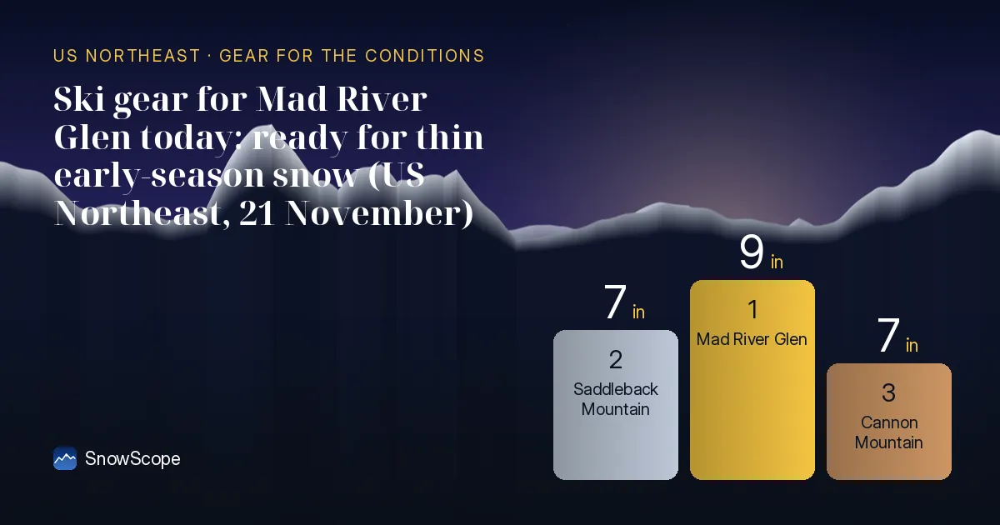
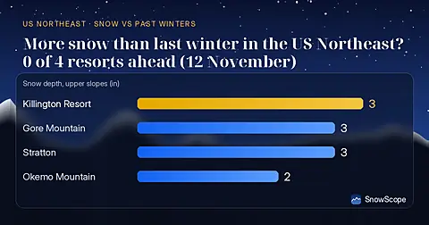
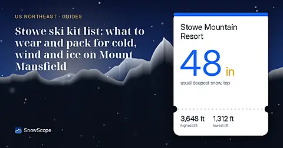

Snow reports · US Northeast
US Northeast: Today's snow in the US Northeast, read, means thin early-season snow, icy mornings and soft afternoons and warm air that can leave a …
Ski gear for Mad River Glen today: ready for thin early-season snow (US Northeast, 21 November)

Today's snow in the US Northeast, read, means thin early-season snow, icy mornings and soft afternoons and warm air that can leave a crust. Here is what to pack and wear at each resort, and when to ski. Snow in the mountains is water held back for spring: what falls now feeds rivers and reservoirs later.
Today's snow and weather
Thin early-season snow (upper slopes under 12 in (30 cm)): Mad River Glen (9 in (22 cm)), Saddleback Mountain (7 in (19 cm)) and Cannon Mountain (7 in (18 cm)).
Icy mornings and soft afternoons (0 °C level above mid-mountain by day, below the base at night): Mad River Glen, Saddleback Mountain and Cannon Mountain.


Rain threatens upper slopes at Saddleback Mountain where 20 cm sits at 1,218 m. Freezing level rises to 3,760 m today, 22 November.

Wildcat Mountain forecast to gain 56 cm over 14 days. Week one (23–29 Nov) brings 29 cm, with 22 cm falling on 27 November. Data from 22 November.

The 0 °C level reaches 12,861 ft (3,920 m) on 21 November in the US Northeast. Snow line peaks at 11,811 ft (3,600 m), above all resort tops.
Today's snow in the US Northeast, read, means thin early-season snow, icy mornings and soft afternoons and warm air that …


Only 16 US Northeast resorts have skiable snow on 18 Nov. Thin cover and rain-crust risk mean careful gear choices. Forecasts for 19-21 Nov show no new snow.

Only 16 Northeast resorts hold snow on 18 November, with Tuckerman Ravine leading at 38 cm. No new snow forecast through Saturday.

The snow has pulled back since 13 November, from 6,880 sq mi (17,820 km²) to 6,039 sq mi (15,640 km²) today; for 18 November our forecast gives …

2 of 4: that is how many resorts in the US Northeast are clearly above normal today. How does this winter look so far? We set today's snow at 4 …

Tuckerman Ravine holds 24 cm on upper slopes. Early-season snow is thin; stay on groomed runs and check lifts before you go.

5 in (12 cm) expected at Stowe by 16 November. Most snow falls 14-15 November on upper slopes. Data from 13 November.

As of 13 November, Killington's 12 cm is ahead of 42 past winters at this date; peak weeks typically arrive weeks 9, 11, and 10.

Stratton has 5 in (12 cm) on 2026-11-13 after 72 hours of snow. 28 Northeast resorts now have cover. Small amounts continue; best powder weeks arrive much later.

On 12 November the 0 °C level in the US Northeast ranges from 591 ft to 4,593 ft. The snow line sits 300 m lower, so rain hits the base at most resorts while upper slopes stay dry.

On 12 November, four US Northeast resorts have less snow than a year ago. Gore Mountain is down 6 cm (2 in). SnowScope snow history, 12 Nov 2026.

Sugarbush Resort tops the Northeast with 22 cm of new snow forecast over 14 days starting 13 November. First week brings most of the total.


On November 10, the freezing level reaches 5,313 ft (1,620 m) above Northeast summits, bringing rain before 20–25 cm of snow arrives.

Northeast forecast made 10 November: 10 in (25 cm) of new snow arriving through 13 November will transform snow cover from 1 resort to 62.

A practical kit list for Stowe, Vermont: layers, face cover, goggles, sharp edges and hand warmers, tied to the snow of 46 past winters on Mount Mansfield.

Magic Mountain Ski Area in southern Vermont sits on thin natural snow. Peak depths at the base are 21 in (54 cm); at the top, 26 in (67 cm). Data from 46 past winters, November 2026.

Mad River Glen, Vermont: natural snow, about 30 in (75 cm) at the usual peak at mid-mountain over 46 past winters, February deepest. Three ways to plan a day there.